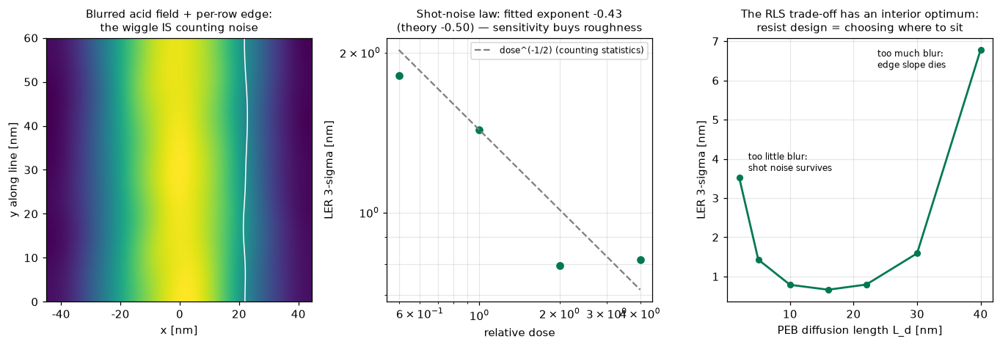
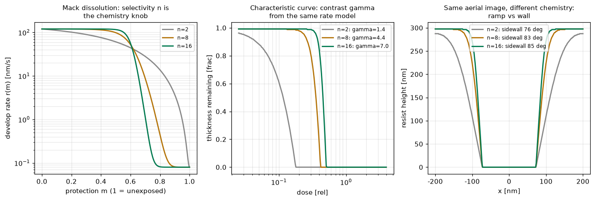

露光装置（キヤノン照準）が届けるのは空中像まで。それをエッジに変えるのはレジスト材料——半導体材料メーカーの主戦場。化学増幅レジスト（CAR）の確率過程（光子計数→酸生成→PEB拡散→現像しきい値）をモンテカルロで実装し、LER∝dose^(-1/2)というショットノイズ則と拡散長の内部最適を数値で示す。さらにMack溶解モデルから特性曲線γと側壁角を導出——同じ空中像でも化学で「坂」にも「壁」にもなる。
吸収光子はPoisson、酸生成は間引きPoisson、PEB拡散はガウシアンぼかし、現像はしきい値——この計数実験の連鎖の分散が行ごとのエッジ位置に化けるのがLER。モンテカルロ出力に対してLER∝dose^p のフィットで p=−0.43（計数統計の理論−0.5）を確認：感度を上げる（低ドーズ化）とラフネスで払う、というRLSトレードオフの根が数式でなく「実験」で出てくる。拡散長L_dの掃引では16nmに内部最適：ぼかしはショットノイズを平均化する（善）が像勾配も殺す（悪）。レジスト設計＝この三すくみのどこに座るかの選択。

溶解レート r(m)=r_max(a+1)(1−m)ⁿ/(a+(1−m)ⁿ)+r_min（Mackモデル）と一次Dill露光 m(x,z)=exp(−CEI(x)e^(−αz)) から、各列の現像前線 t(x,z)=∫dz/r を積分してプロファイルを構成。閉ループ：ドーズ・トゥ・クリアE0で最明部の全膜厚クリア時間がちょうど現像時間（誤差<1%、テスト）。同じレート模型から特性曲線γ（n=2→16でγ1.4→7.0）と側壁角（76→85°）が出る：「坂」か「壁」かは露光機ではなく溶解化学が決める——材料メーカーがリソの最後の1nmを握っている理由。

関連（実装済み）：KrF結像・プロセスウィンドウ（露光側）・CD-SEM計測（測る側）・EUV転写性。出所：fujifilm/{car_stochastics, resist_develop}.py。